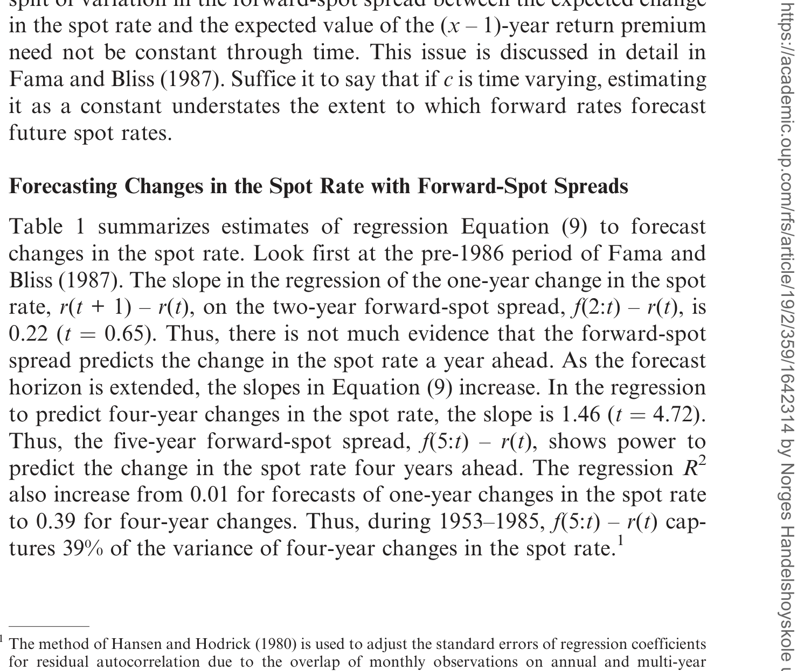
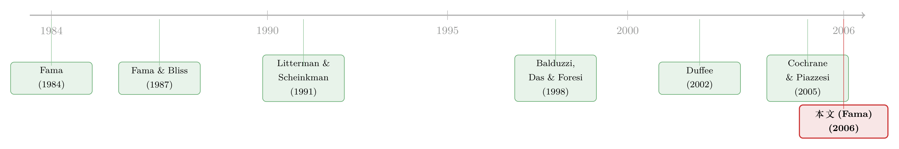

利率走过的那道长弧：远期利率预言的，究竟是什么？
本文读的是 Fama (2006, Review of Financial Studies)：远期利率确实能预测一年以上的现货利率变动，这个老结论在 1986–2004 的样本外依然成立；但它的来源并不是 Fama–Bliss (1987) 所说的「向一个常数均值缓慢回归」，而是「向一个会移动的长期期望值回归」——这个期望值被一连串永久性冲击推着走，1981 年中之前净为正、之后净为负。换句话说，远期利率抓到的是利率围绕「当下这条会漂移的长期中枢」的局部均值回归，而那道横跨半个世纪的大弧线，本身基本是市场没料到的。
1 一张图里的悬念
先看一条所有做固定收益的人都熟悉的曲线：美国一年期现货利率 (spot rate)，从 1952 年 6 月走到 2004 年 12 月。
它在 1952 年 6 月是 1.8%，一路爬升，到 1981 年 8 月见顶 15.8%，然后又一路下滑，到 2004 年底回到 2.7%。半个世纪，一个先上后下的巨大弧形。
Fama and Bliss (1987) 当年发现：当预测期限拉长（超过一年），远期利率 (forward rate) 对未来现货利率有很强的预测力。他们给出的解释是——现货利率在缓慢地均值回归 (mean reversion)，回归到一个常数的期望值；这种回归在短期看不出来，只有在长期才显形。于是这条大弧线，自然被读成「均值回归」的产物：先偏离均值往上冲，再慢慢被拉回来。
故事讲得很顺。但 Fama 在这篇 2006 年的文章里，开篇就给它埋了一颗钉子。
他画了第二条线：五年期远期利率相对一年期现货利率的利差，f(5:t) – r(t)。逻辑很简单——如果远期利差真是在预测这条长弧，那么它应该在 1981 年 8 月之前（利率上行期）更多地为正，在之后（利率下行期）更多地为负。
可数据偏偏相反。这个利差总体上更多为正，而且 1981 年 8 月之后的均值，反而是之前的大约三倍。
这就是全文的张力所在：远期利率确实能预测现货利率的长期变动（Fama–Bliss 的结论没错），但它预测的方向和那条大弧线对不上。它根本没在预言这道长摆。 那它在预言什么？
2 先把逻辑摆清楚
要回答这个问题，得先把「远期利率预测现货利率」这件事的代数骨架搭出来。Fama 沿用了 Fama–Bliss (1987) 的记号：冒号前是定义变量的期限，冒号后是观测时点。p(x:t) 是 x 年期零息债价格的对数，r(t) 是一年期现货利率，f(x:t) 是 t 时刻锁定的、从 t+x-1 到 t+x 那一年的远期利率：
$$f(x:t) = p(x-1:t) - p(x:t) = r(x:t) - r(x-1:t)$$
关键的一步，是把债券价格写成它存续期内各年一年期收益率之和。由收益率的定义（Equation 1），有恒等式（Equation 4）：
$$p(x:t) = -h(x,x-1:t+1) - h(x-1,x-2:t+2) - \cdots - r(t+x-1)$$
取 t 时刻的条件期望 E_t（Equation 5），再把前 x-1 项归并成一项（Equation 6）：
$$p(x:t) = -E_t\,h(x,1:t+x-1) - E_t\,r(t+x-1)$$
直觉是：今天的债券价格，等于把未来现货利率与持有收益的理性预测，全部贴现进去。把这个表达式代回远期利率定义、再减掉现货利率，就得到全文真正的「主方程」（Equation 7）——远期-现货利差的分解：
这条式子告诉我们：远期-现货利差里，装着两样东西——一是对现货利率未来变动的预测，二是债券的期限溢价。而且由于 Equation (4) 对已实现收益也成立，Equation (7) 对实现值同样成立（Equation 8）。这意味着可以跑两个互补的回归，把利差里的信息「精确地」一分为二。我们只关心第一个（Equation 9）：
$$r(t+x-1) - r(t) = a + c\,[f(x:t) - r(t)] + e(t+x-1)$$
斜率 c 衡量的，正是远期-现货利差中能归因于「预期现货利率变动」的那一部分。c 显著为正，就说明远期利差有预测现货利率变动的能力。这就是整套检验的核心。
（顺带一提，标准误用了 Hansen and Hodrick (1980) 的方法来校正月度观测重叠带来的残差自相关；Fama 特意解释了为什么这里不用 Newey–West——因为它会把本应照单全收的、由观测重叠产生的自相关给「打折」掉。）
3 回归「散架」了，又被一个虚拟变量救了回来
把数据按 Fama–Bliss 的老样本（1953–1985）跑一遍，结论漂亮：预测一年后变动时，二年期利差的斜率只有 0.22（t = 0.65），几乎没用；但随着预测期限拉长，斜率一路升到预测四年后变动时的 1.46（t = 4.72），R² 从 0.01 涨到 0.39。也就是说，五年期利差能解释四年期现货利率变动方差的 39%。
接着，一个自然的问题是：把样本延到 2004，结论还在吗？
乍一看，回归散架了。 1953–2004 全样本里，斜率虽然还是正的、还是随期限上升，但比 1953–1985 小了一大截，只有四年期那个斜率勉强超过两倍标准误，R² 也变得微不足道。
难道 1985 年之后远期利率就失灵了？恰恰相反。单独看 1986–2004，预测力比 1953–1985 还强：R² 从一年期的 0.02 一路升到四年期的 0.57。两个子样本都很强，合起来却很弱——这本身就很可疑。
但真正关键的一步，藏在截距里。Equation (9) 的截距，是利差没能解释掉的「平均现货利率变动」。Fama 发现：1953–1985 的截距是正的，1986–2004 的截距是强烈为负的。这正好说明——1953–1985 那段上行、和 1986–2004 那段下行，大部分是市场的意外，是远期利差没预测到的。全样本回归之所以「散架」，是因为它被迫去拟合一个接近零的平均变动（-0.00%/年），而这恰好把 1953–1985 的 +0.19%/年和 1986–2004 的 -0.34%/年这两段方向相反的漂移给抵消平了。

Table 1: summarizes estimates of regression Equation (9) to forecast
于是 Fama 做了一件极简单、却极有说服力的事：给回归加一个虚拟变量 (dummy variable) D，在 1981 年 8 月（现货利率见顶）之前取 1，之后取 0（Equation 11）：
$$r(t+x-1) - r(t) = a + b\,D + c\,[f(x:t) - r(t)] + e(t+x-1)$$
这个虚拟变量，等于允许 1981 年 8 月前后有不同的平均意外变动，把那道长摆从回归里「赦免」出去，好让斜率 c 专心识别远期利差真正预测到的那部分变动。
于是反转出现了。 加上虚拟变量后，全样本（1953–2004）回归里：截距强烈为负、虚拟变量斜率强烈为正（与「长摆是意外」相符）；更要紧的是，远期利差的斜率被抬了上来——从预测一年期变动的 0.49（t = 1.80）升到四年期的 1.38（t = 5.47），R² 从 0.10 升到 0.55。和不加虚拟变量的全样本结果（几乎没预测力）判若两人。
Fama 强调，这个结果并非注定。设想一个相反的世界：如果远期利率的预测力本来就来自对这道长摆的预测，那么引入虚拟变量只会把预测力吸走、让 c 变小。可事实正相反——虚拟变量让 c 变大了。这就强有力地说明：那道长摆，大体上是市场没料到的；远期利率抓到的，是另一种东西。
4 那「另一种东西」，叫局部均值回归
把上面的发现翻译成一句话：现货利率的长期中枢不是常数。它是一个会移动的长期期望值，被一连串永久性冲击 (permanent shocks) 推着走——到 1981 年中为止净为正，之后净为负。远期利率预测到的，是现货利率围绕当下这条中枢的、可被预测的局部均值回归 (local mean reversion)；而中枢本身的漂移，市场基本视为永久、不去预测。
那么，是什么在推这条中枢？Fama 给的经济故事，落在通胀上。1971 年美国切断美元兑黄金的通道，世界第一次大规模运行法定货币 (fiduciary currency)——一种不再由黄金这类商品背书的货币。此前几乎没有经验，随之而来的高通胀与高利率是个意外；更合理的是，市场据此理性地预测：法定货币意味着永久更高的预期通胀，于是把前面那些正向的通胀冲击判定为永久。可结果是，美联储（和其他央行）赢下了这场胜算不高的赌局——它们学会了如何驾驭法定货币，把通胀和利率压回低位。这就留下了一连串大多为负的永久性冲击。这个故事，恰好能解释为什么现货利率在图上「看起来」在缓慢均值回归，而这种表观的回归又被远期利差里的预测系统性地错过。
这里要区分两个「均值回归」：一个是利率向一个固定水平回归（Fama–Bliss 的读法），另一个是利率向一条会漂移的中枢回归（Fama 2006 的读法）。两者在短样本里都能产生「远期利率有预测力」的表象，但含义南辕北辙：前者意味着利率终将回到某个长期常数，后者意味着长期中枢本身是非平稳的。
那怎么把这两种读法对质？Fama 的做法是在回归里再塞一项：d[r(t) - K(t)]，其中 K(t) 是截至 t-1 的前 60 个月现货利率的均值——一个「拖尾平均」式的长期水平。Balduzzi, Das, and Foresi (1998) 与 Duffee (2002) 那类动态多因子模型，正是设定利率向一个缓慢均值回归（但平稳）的中枢靠拢；如果他们对，d 应当显著捕捉到向 K(t) 的回归。结果（1958–2004，含远期利差与该项的回归）：四年期那一行，远期利差斜率 c = 0.63（t = 1.86），而 d = -0.73（t = -2.63），R² = 0.62。证据更偏向非平稳的中枢，而非向一个缓慢平稳的均值回归。
（关于「把远期曲线拆成稳态、习惯与期待三股力量」的另一种现代建模思路，可参见《把利率曲线拆成三个人：稳态、习惯、与期待》；而「短端利率的漂移到底是不是非线性」这桩同源的老公案，则见《利率会不会「拐弯」？》。)
5 文献脉络
把这条线索拉直了看，它其实是一个人和一个问题缠斗几十年的故事。
最早，远期利率能否预测现货利率，检验多用美国国库券，结论相当负面——Hamburger and Platt (1975)、Shiller, Campbell, and Schoenholtz (1983)、Fama (1984) 大体都发现：除了往前一两个月，远期利率几乎预测不了现货利率。转折点是 Fama and Bliss (1987)：把预测期限拉长，长端远期利率突然显出强大的预测力，他们归因于现货利率的缓慢均值回归。

接着，整个期限结构文献分出几条岔路。一条是 Litterman and Scheinkman (1991) 开创的多因子视角——水平、斜率、扭曲三因子驱动收益率，其中前两个对现货利率的时序行为最要紧；Duffee (2002) 据此断言，水平冲击是「近乎永久」、斜率冲击是「商业周期长度」的。另一条是 Balduzzi, Das, and Foresi (1998) 的「中枢」模型，让现货利率向一个平稳但缓慢回归的移动均值靠拢。还有一条由 Hamilton (1988) 点燃的体制转换 (regime-switching) 路线，用两三个体制去刻画利率（参见《利率会换挡：当「换挡」本身也成了一种被定价的风险》）。Cochrane and Piazzesi (2005) 则在同期把远期利率的预测信息推向极致。
Fama 2006 站在的位置很微妙：他不否认这些大模型，但要做一件「减法」——用最简单透明的回归证明，现货利率的那道长摆来自永久性、非平稳的冲击，而非「近乎永久」或「缓慢平稳」。这是对 Duffee、Balduzzi–Das–Foresi 那一句「near-permanent」的正面叫板。
6 评论与延伸（Q&A + 研究方向）
(a) 几个可能的疑问
Q：选 1981 年 8 月当断点，是不是「看着图凑出来的」，有数据窥探之嫌？
Fama 自己承认断点是由假设（长摆基本不可预期）事先指定的，不是搜出来的。更重要的论证是：含虚拟变量的全样本估计（在 1981 年 8 月「切」）与不含虚拟变量的子样本估计（在 1985 年「切」）给出同样的结论——这说明推断对断点选择不敏感。而且如前所述，如果长摆其实可被预测，加虚拟变量本会削弱远期斜率，结果它反而增强了。
Q：远期利率「有预测力」和「市场预测对了」是一回事吗？
不是。这正是全文的精髓。远期利差里同时装着「预期变动」和「期限溢价」两块（Equation 7）；
c显著只说明利差里有对现货利率变动的理性预测分量，但截距告诉我们，那道长摆本身被系统性地错过了。市场对围绕中枢的局部波动预测得不错，对中枢的漂移则几乎是事后才知道。
Q：这和 Fama–Bliss (1987) 到底分歧在哪？结论不是都「远期能预测现货」吗？
结论同，机制不同。Fama–Bliss 把预测力归于向常数均值的缓慢回归；Fama 2006 证明均值是非平稳的、被永久冲击推着走，远期抓到的只是向当下中枢的局部回归。一个说「利率终会回到某个固定水平」，一个说「那个水平本身在随机游走式地漂移」。
Q：为什么不用 Newey–West 标准误来处理异方差？
Fama 解释：Newey–West 会下调那些本应照单全收的残差自相关（它们纯粹来自月度观测在多年期变量上的重叠）。更关键的是，这些回归里残差波动的变化似乎与解释变量无关——残差平方与拟合值的相关性接近零（通常小于
0.005），因为主解释变量是利差而非利率水平，所以异方差并不构成推断问题。Cochrane and Piazzesi (2005)也发现，这类重叠样本里 Hansen–Hodrick 标准误与 bootstrap 很接近。
Q：「永久冲击」和体制转换模型里的「换体制」有何不同？
体制模型参数随体制数量迅速膨胀，通常只允许两三个体制，识别还常陷在不确定性里。Fama 的观点是：若现货利率真受一连串永久冲击驱动，两三个体制根本不够；他用的「更简单但更灵活」的设定（本质上让中枢非平稳地漂移），反而可能更贴近真实过程。
Q：这套结论对今天的久期与对冲管理有什么含义？
如果长期中枢非平稳，那么把利率「锚定」在某个历史均值上来做估值或对冲，是危险的——你会系统性地低估利率长期偏离的幅度。换句话说，远期曲线对短中期的相对价值有信息，但别指望它告诉你这一轮大趋势的终点在哪。
(b) 几个可能的研究问题与提案
1. 把「永久 vs 近永久」之争搬到公司债收益率上。
【经济故事】Fama 的非平稳中枢是在国债现货利率上识别的。但公司债的长期中枢还叠加了一条信用利差的中枢——它同样可能被永久性冲击（监管、违约周期、外资持有人结构）推动。若信用利差中枢也非平稳，那么「信用利差均值回归」的交易逻辑会和利率一样脆弱。
【可行性】中。需要 TRACE 成交价构造的公司债收益率曲线 + 评级分层；识别上可借用 Fama 的虚拟变量/拖尾均值 K(t) 框架，难点在于把利率中枢与信用中枢的漂移分离开。
2. 外资持有人结构与利率中枢的漂移。 【经济故事】1981 年后那串负向永久冲击，时间上恰与外国官方部门大举增持美债重叠。一个自然的问题是：长期中枢的漂移，有多少能归因于外资需求曲线的移动，而非纯粹的通胀预期？ 【可行性】中。可用 TIC 数据 + Koijen–Yogo 式需求体系，把现货利率中枢分解为「内资 vs 外资需求」的贡献；识别需要外生的外资需求冲击（如储备积累、估值汇率变动）。doable 但工具变量是关键瓶颈。
3. 局部均值回归的速度，是否随流动性状态变化？
【经济故事】Fama 的「局部均值回归」假设回归速度大体稳定。但在流动性枯竭期（如 2008、2020 三月），中介资产负债表受限，价格偏离中枢后回归得更慢。把回归速度设成流动性的函数，可能解释为什么远期预测力在危机窗口里时强时弱。
【可行性】高。在 Equation (9) 框架里让 c 随流动性代理（做市商杠杆、bid–ask）交互即可；数据现成，识别清晰。
4. 永久冲击的「源头分解」。 【经济故事】Fama 把永久冲击归给通胀预期，但只给了叙事，没做正式分解。能否用 TIPS–名义利差、或 SPF 长期通胀预期，把现货利率中枢的永久成分进一步拆成「实际利率中枢」与「通胀中枢」两块？ 【可行性】中。TIPS 仅自 1997 年才有，样本短；但可结合调查预期和共同趋势 (common trends) 模型做无条件分解（参见《什么在推动国债收益率？》 的那种「当下按兵不动、三年后才发作」的冲击识别思路）。
7 我的判断
这篇文章的贡献，不在于推翻了什么，而在于用最少的工具，逼出了一个更难被吸收的事实。Fama 没有上连续时间、没有上仿射模型，只用一个虚拟变量和一个拖尾均值，就把「远期利率预测现货利率」这个三十年的老结论，从「向常数回归」翻新成「向非平稳中枢的局部回归」。而且他的论证方式极漂亮：不是直接去拟合长摆，而是反过来用「赦免长摆」后斜率不降反升，来反证长摆本就不可预期。这种「用反事实来证明」的手法，值得每个做实证的人琢磨。
但识别上我有两点保留。其一，整套结论高度依赖「1981 年 8 月那道断点 = 永久冲击的转向点」这一叙事性判断；虽然 Fama 用子样本一致性做了稳健性辩护，但永久冲击与「极缓慢的平稳回归」在有限样本里本就难以严格区分——非平稳性的证据是「seems to favor」，不是铁证。其二，经济故事（法定货币 → 通胀意外 → 央行学习）讲得很动人，却基本是事后合理化，文中没有对永久冲击做正式的、可证伪的来源分解。
后续我最想看到的，是把这套「非平稳中枢 + 局部均值回归」的诊断，搬到信用市场和有外资需求扰动的市场里去——既检验它的外部有效性，也顺势回答一个 Fama 留白的问题：推着中枢漂移的那只手，除了通胀预期，还有没有需求侧的份额。
参考文献
Balduzzi, P., S. R. Das, and S. Foresi (1998). The Central Tendency: A Second Factor in Bond Yields. Review of Economics and Statistics 80(1), 62–72.
Campbell, J. Y., and R. J. Shiller (1991). Yield Spreads and Interest Rate Movements: A Bird's Eye View. Review of Economic Studies 58(3), 495–514.
Cochrane, J. H., and M. Piazzesi (2005). Bond Risk Premiums. American Economic Review 95(1), 138–160.
Duffee, G. R. (2002). Term Premia and Interest Rate Forecasts in Affine Models. Journal of Finance 57(1), 405–443.
Fama, E. F. (1984). The Information in the Term Structure. Journal of Financial Economics 13(4), 509–528.
Fama, E. F. (2006). The Behavior of Interest Rates. Review of Financial Studies 19(2), 359–379.
Fama, E. F., and R. R. Bliss (1987). The Information in Long-Maturity Forward Rates. American Economic Review 77(4), 680–692.
Hamilton, J. D. (1988). Rational-Expectations Econometric Analysis of Changes in Regime: An Investigation of the Term Structure of Interest Rates. Journal of Economic Dynamics and Control 12(2–3), 385–423.
Hansen, L. P., and R. J. Hodrick (1980). Forward Exchange Rates as Optimal Predictors of Future Spot Rates: An Econometric Analysis. Journal of Political Economy 88(5), 829–853.
Litterman, R., and J. Scheinkman (1991). Common Factors Affecting Bond Returns. Journal of Fixed Income 1(1), 54–61.
Shiller, R. J., J. Y. Campbell, and K. L. Schoenholtz (1983). Forward Rates and Future Policy: Interpreting the Term Structure of Interest Rates. Brookings Papers on Economic Activity 1983(1), 173–217.